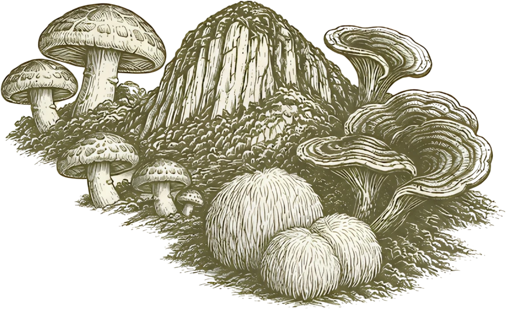

Del micelio a la mesa.
Hongos para cocinar con criterio. Conocer la seta. Imaginar el plato.


3 especies visibles.
Ninguna especie coincide con esa preparación.
Melena de león
Hericium erinaceus
Textura suave. En piezas o desmenuzada.
Ilustraciones de especie y de platos. Perfiles culinarios de referencia.[1] Recetas adaptadas, pendientes de prueba en cocina.
Disponibilidad por confirmar.
Consultar shiitake